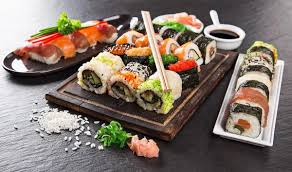
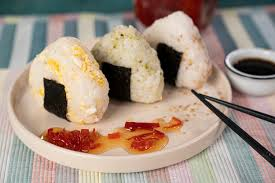
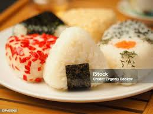
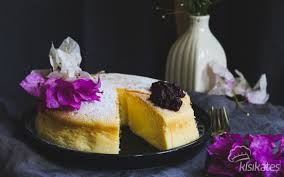

ÜLKELER
- Fransa
- İtalya
- Japonya
|
|
ÜLKELER
|
HAKKIMIZDA | İLETİŞİM | |||
Japonya'da suşi kelimesinin yer aldığı ilk yazılı metin 718 yılında Yoro Code'undadır. Bir vergi kalemi olarak "雑鮨五斗 (yaklaşık 64 litre zakonozuşi or zatsunozuşi)" ibaresi yer almaktadır. Ancak ima edilen suşi'nin, günümüzdeki yemeğin kaynağı olan yemek olup olmadığı ve hatta telaffuzunun bile aynı olu olmadığı bilinmemektedir. 9. ve 10. yüzyıllarda "鮨" ve "鮓" suşi olarak telaffuz edilmektedir ve bu "suşi", günümüz narezuşi'sine benzerdir.
takip eden 800 yıl boyunca, suşi de zaman içerisinde değişiklik göstermiştir. Japon yemek kültüründe günlük öğün sayısı üçe çıkmış, pilav buharda değil haşlanarak pişirilmeye başlanmış ve hepsinden önemlisi pirinç sirkesi keşfedilmiştir. Suşi halen balık ve pirincin mayalanması ile yapılırken, mayalanma süresi kademeli olarak azaltılmış pilavı da balık ile beraber yenmeye başlanmıştır. Muromachi döneminde (1336 - 1573), oşisuşi yapımında mayalanma nihayet tamamen bırakılarak pirinç sirkesi kullanımına geçilmiştir. Azuchi-Momoyama döneminde (1573 - 1603), namanare keşfedilmiştir. 1603 tarihli Portekizce - Japonca sözlüğünde namanrina zuşi maddesi yer almaktadır, yarı yapılmış suşi anlamındadır. Namanare, nazrezuşi'ye nazaran daha kısa süre mayalanarak yapılmıştır ve muhtemelen içeriğinde de pirinç sirkesi bulunmaktadır. Ancak kokusu, nazrezuşi'ye özgün kokuya sahiptir.
Narezuşi'nin kokusu, mayalanma sürecinin zamanla bırakılmasına nedenlerden birisidir. Küflü peynir, balık ve pirinç sirkesi karışımı bir koku olarak tarif edilir. 12. yüzyılın erken dönemlerinde Konjaku Monogatarishu tarafından yazılmış bir hikâyede yemeğin tadı güzel olsa bile kokusunun çekici olmadığı iması bulunmaktadır. 18. yüzyılın başlarında oşizuşi Osaka'da bulunmuş ve 18. yüzyılın ortalarında Edo'ya gelmiştir. Süresi az da olsa hala mayalanma süreci ile hazırlandığından, dönemin lokantalarının vitrinlerinde müşterilere suşinin ne zaman çıkacağına dair ilgilendirme yazıları asılmıştır. Bento kutularında suşi'nin satışı Hanami dönemine rastlar. İnarizuşi de satılan suşi'ler arasındadır. Ancak makizuşi ve çiraşizuşi'nin satışı Edo dönemine denk gelir. Edo döneminde binlerce suşi lokantası arasında üç tanesinin ismi günümüze kadar ulaşmıştır; Matsunozushi (松之鮨), Yoheizushi (興兵衛鮓) ve Kenukizushi (けぬき寿し) . 19. yüzyılın başlarında yaklaşık yirmi yıl aralıklarla açılmışlardır. Nigirisuşi'nin keşfinden sonra yayılması çok hızlı olmuştur. 1852'de yayınlanan Morisadamanko (守貞謾稿) isimli kitapta Edo'da, bir ço'da (100 metreye 100 metrelik, yaklaşık 10.000 metrekare büyüklüğünde bir alan birimi) bir veya iki suşi lokantası olduğu, anca bir ya da iki ço'da bir tane soba lokantası olduğu bilgisi yer almaktadır. Nigirizuşi'nin ilk örnekleri bugünkü türlere benzememektedir. Balık eti soya sosu, pirinç sirkesi veya tuz ile marine edilmektedir ve bir çeşni sosa ihtiyacı yoktur. Bazı balıklar ise yemeğe konmadan önce pişirilmektedir. Balık boyutları ise bugünün balık boyutlarının yaklaşık iki katıdır.
Ünlü Mekanlar:Harutaka,Sukiyabashi,NikakuOnigiri'nin bilinen ilk örneği 2.000 yıldan daha öncesine dayanır ve Ishikawa vilayetindeki bir arkeolojik alanda bulunmuştur . Heian döneminde (794-1185) saray görevlilerine servis edilmiş ve bu görevliler ile soylular arasında ritüel bir hediye alışverişinde rol oynamıştır . Turşu erik ve diğer malzemelerin eklenmesiyle, Kamakura döneminde (1192-1333) askeri bir tayın haline gelmiş ve savaş türkülerinde kutlanmıştır. Edo döneminde (1603-1867) herkesin erişebileceği popüler bir yiyecek olarak ortaya çıkmıştır; bu durum sanatçı Hiroshige'nin ünlü serisi Fifty-three Stations of the Tōkaidō'da (1833-34) onigiri yiyen bir grup gezgini tasvir eden tahta baskısında görülmektedir. 1885'te Japonya'nın ilk demir yolu hattında satışı onaylanan ilk yiyeceklerden biriydi .
Onigiri , al dente tarafında olması gereken istenilen sertliğe kadar kaynatılmış veya buharda pişirilmiş yapışkan kısa taneli beyaz pirinçle yapılır. Somon , susam tohumu, salamura sebzeler, ton balığı ve yumurta gibi eklemeler , pişirildikten sonra pirinçlere eklenebilir. Gelenekçi şefler ellerine tuz döker ve sonra onigiriyi toplar haline getirir. Bunlar genellikle tamamen veya kısmen kağıt inceliğindeki deniz yosunu tabakalarına sarılır ve deniz yosunu pullarını kurutulmuş otlar ve tuzla birleştiren furikake adı verilen çeşniyle kaplanır .
Onigiri , Japonya'da her yerde bulunan bir yiyecektir ve genellikle hareket halindeyken hızlı bir atıştırmalık olarak yenir. Konbini (marketler) ve süpermarketler, onigiri'ye ayrılmış buzdolabı kutuları içerir, tren istasyonlarının ve parkların yakınında onigiri satan sokak satıcıları görülebilir ve bento kutularında (Japonların parçalı öğle yemeği kutuları) ve okul öğle yemeği menülerinde bilindik bir varlıktır .
Ünlü Mekanlar:Onigiri Café Risaku,Bar And Onigiri Utsusemi Hanare Japonya'da cheesecake'in ticari öncüleri 1960'larda ortaya çıktı. 1969'da Berlin'e yaptığı bir seyahatte, Kobe'nin Morozoff'unun sahibi Tomotaro Kuzuno, yerel bir käsekuchen cheesecake'iyle (Alman çeşidi) karşılaştı ve o kadar hayran kaldı ki, bunun kendi ülkesinde de sunulması gerektiğine karar verdi. Osaka'daki Rikuro Ojisan, karakteristik titrek, havadar, sufle tarzı Japon cheesecake'ini servis eden ilk zincirlerden biriydi. 1970'lerde, cheesecake'i konu alan kadın dergileri, kekin ülke çapında popülerliğinde bir patlamaya yol açtı. 1980'lerin sonlarında, peynir benzeri tiramisu ve peynirle doldurulmuş buharda pişirilmiş çörekler içeren daha fazla tatlı ortaya çıkmaya başladı ve peynirin Japon mutfağındaki yerini sağlamlaştırdı. 1990'lardan beri, cheesecake'e olan iştah ve bulunabilirlik Japonya genelinde yaygınlaştı.
Ünlü Mekanlar:Morozoff,Mr.Cheesecake,Cheese GardenTakikomi gohan, Nara döneminde yaratıldı. O zamanlar pirinç kıttı, bu yüzden insanlar pirinci darı veya diğer tahıllar, yabani sebzeler, yam veya Japon turpu ekleyerek korudular ve katemeshi adı verilen erken bir takikomi gohan biçimi yarattılar. Muromachi döneminde, katemeshi popüler hale geldi ve arpa, fasulye ve sebzeler gibi malzemeler kullanılarak kawarimeshi adı verilen bir yemeğe dönüştü. Zamanla insanlar yaratıcı oldular ve mevsimlik malzemelerle çeşitli yemekler yaptılar.
Takikomi gohan (炊き込みご飯, 炊き込み御飯), dashi ve soya sosuyla tatlandırılmış ve mantar, sebze, et veya balıkla karıştırılmış bir Japon pirinç yemeğidir. Malzemeler pirinçle birlikte pişirilir.Yemek, Japonya'da bu mevsimde birçok kök sebze ve mantar hasat edildiğinden, Japonya'daki insanlar tarafından sonbahar mevsiminde tüketilir. Malzemeler mevsim sebzelerine ve balığa göre değişecektir. Yemeğin besin değeri olduğundan ve sebzeler ve proteinlerle az miktarda pirinç kullandığından, bazı Japonlar bunu diyet amaçlı yerler.
Ünlü Mekanlar:Hakuzan,Kako Okamoto
Ramen dünya çapındaki ününe kavuştuğundan beri herkes onu bir Japon yemeği, olarak biliyor.
Oysa ramenin asıl kökeni Çin’dir. Dolayısıyla günümüzde Japon restoranlarında afiyetle
tükettiğimiz ramen aslında bugünkü haline sonradan erişti.
Noodle eriştesini çorbanın içine koyma fikri Japonya’ya 19. yy. Çin’inden miras kalmış. O
zamanlar birçok gezgin ve göçmen Japonya’ya geliyor, gelirken kendi memleketlerinden kıyafet
ve gıda gibi çeşitli malzemeleri de ticaret yapmak için beraberlerinde getiriyorlardı.
Tokyo’nun güneyindeki Yokohama kenti sahip olduğu büyük ticaret limanıyla, bu yeniliklere
öncülük yapan yerlerden biriydi.
Dolayısıyla noodle çorbası da Japonya’ya ilk olarak Yokohama’dan geldi ve buradaki Çin
mahallesinden tüm ülkeye yayıldı. Japonya’nın ilk ramen lokantası ise 1910’da Asakusa’da
açıldı. En popüler ramenlerden biri olan Fukuoka rameninin ortaya çıkması ise 1950’leri
buldu. Ufak bir anekdot: Fukuoka rameninin ortaya çıkışı aslında bir hata sonucuydu.
Bir gün çorbayı gerektiğinden çok daha fazla pişiren bir aşçı, çorbanın süt gibi bir kıvama
geldiğini ve bu halinin de oldukça lezzetli olduğunu fark etti. O günden beri de bu pişirme
yöntemi hala kullanılmakta.